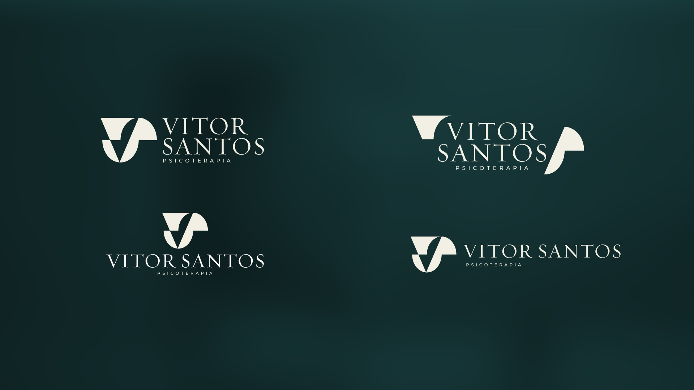
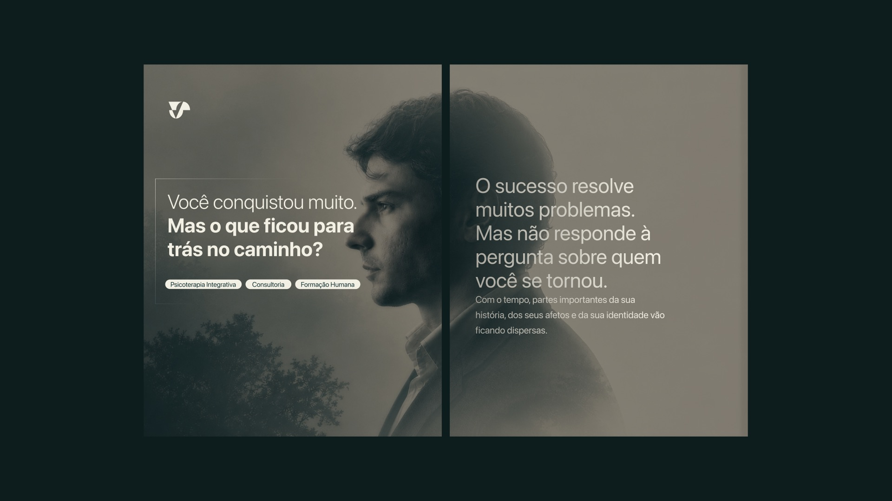
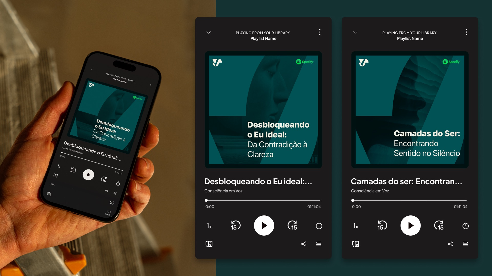
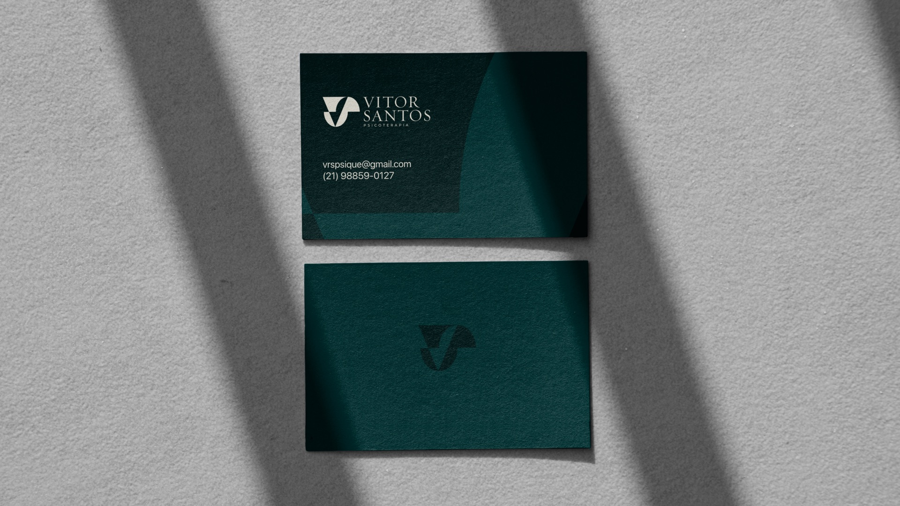

Vitor Santos
Vitor Santos is a psychotherapist and consultant for leaders. His work isn't about fixing what's wrong — it's about opening what was closed, helping people understand themselves before trying to improve. The brand had to carry that depth — introspective and philosophical, yet clear and grounded. So we built an identity around a single gesture: the act of opening.

// Project Goals
Translate a deep, introspective approach into a clear visual language — without flattening its philosophical weight. Build a flexible mark and system that hold up across his one-on-one therapy and his work with leaders.




// The Result
A monogram system built on the VS — a V that descends into the depths of the self, an S that opens like a capsule releasing meaning. It comes with an elegant serif wordmark, flexible lockups, a palette of deep teal, sage, and cream, and a photo treatment that frames portraits inside the mark itself. Together they give Vitor a presence that feels calm, deep, and human — a brand about opening, not correcting.